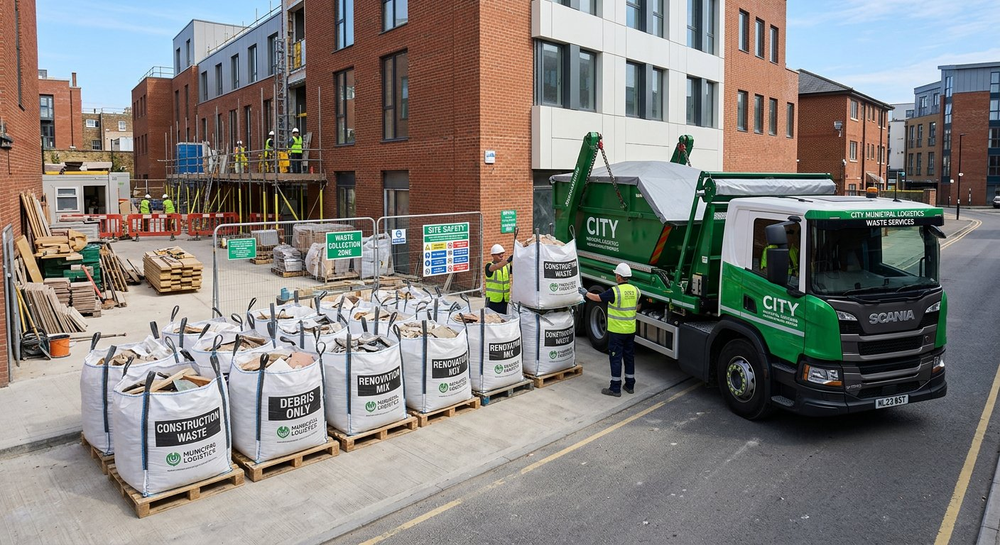
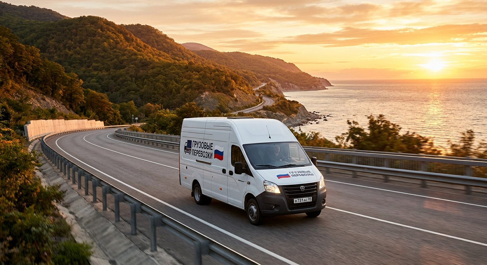

Блог · обновляется каждую неделю
блог.
Переезды, грузчики, упаковка и логистика по городам края. Без воды — практика из 5 000+ заказов с 2014 года.
Главное сейчас

 →
12
лет опыта — статьи пишут практики, а не копирайтеры
→
12
лет опыта — статьи пишут практики, а не копирайтеры


Цены
Цены на грузчиков в Краснодаре: обзор рынка 2026
1 июля · 9 мин чтения
Города · Сочи
Рельеф, пропуска и парковки при переезде в Сочи
8 июля · 8 мин
Популярное
Кейс
Как мы перевезли офис на 40 сотрудников за выходные
6 июля · 10 мин
Упаковка
Правила упаковки мебели при переезде
30 июня · 4 мин
Сравнение
Грузчики на час или на смену?
10 июля · 7 мин
Инструкция
Как разобрать и собрать шкаф-купе при переезде
5 июля · 8 мин

Закон
Вывоз строймусора законно и без штрафов
8 июля · 4 мин
Переезд
Квартирный переезд: пошаговый чек-лист
28 июня · 5 мин
Советы
Как выбрать грузчиков в Краснодаре: 5 критериев
22 июня · 4 мин
Города · Анапа
Курортный сезон, узкие улицы и парковки
10 июля · 9 мин
Новороссийск
Норд-ост, порт и цементная пыль
11 июля · 9 мин
Геленджик
Склоны, узкие дороги и сезонность
12 июля · 8 мин
Инструкция
Как разобрать и собрать кухню при переезде
7 июля · 9 мин
Сравнение
Газель 3 метра или удлинённая
8 июля · 7 мин
Советы
Зимний переезд при минусовой температуре
9 июля · 8 мин
Бизнес
Аутсорсинг разнорабочих: когда выгоднее нанять со стороны
13 июля · 8 мин

Междугородние
Междугородний переезд из края
9 июля · 6 мин
Транспорт
Машина для перевозки вещей: объём кузова
3 июля · 4 мин
Упаковка
Как упаковать хрупкие вещи: посуду, зеркала и технику
28 июня · 9 мин
Бизнес
Офисный переезд без паузы в работе
5 июля · 5 мин
По вашему запросу ничего не нашлось.
20 статей · от новых к проверенным временем. Не нашли тему — напишите нам, расскажем в следующей статье.